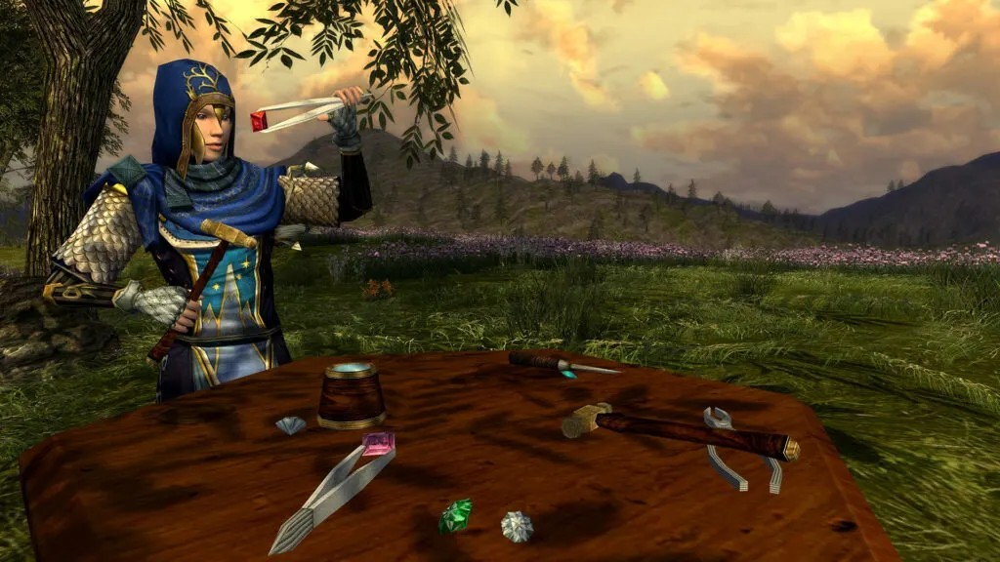
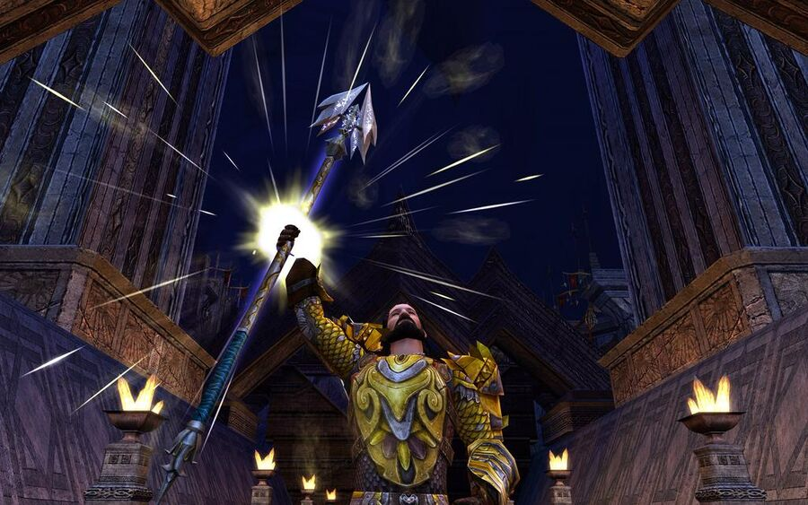
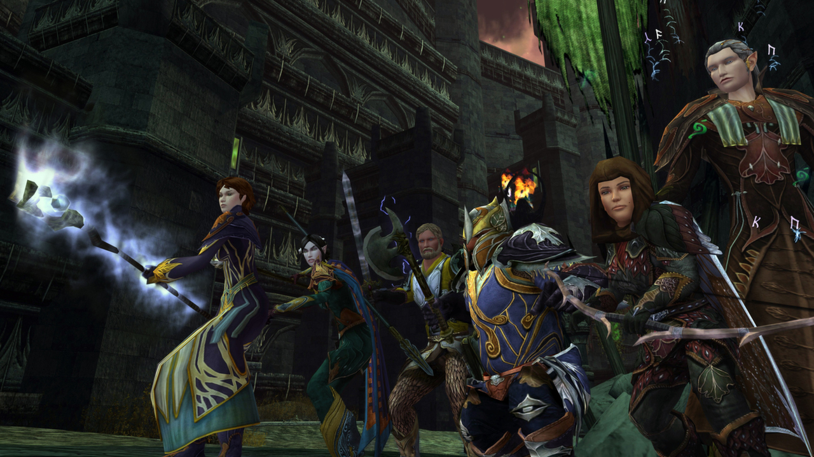

A comprehensive guide to LOTRO's crafting system. Learn which vocation to choose, how to level efficiently, and how to profit from your skills.

Understand the revamped Legendary Items system. Learn how to obtain, level, and optimize your LIs for maximum power.

Everything you need to know to start your journey through Middle-earth. From character creation to your first adventure.
The following guide covers the mechanics and other useful information about the Tower of Orthanc or ToO on T2C mode.